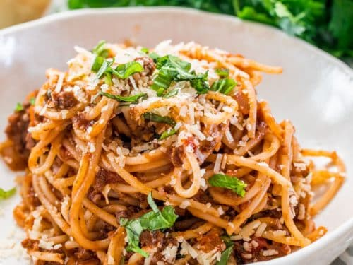

Spaghetti Bolognese

Description
Spaghetti Bolognese is a classic Italian meat sauce that is a staple in most families. My super simple Spaghetti Bolognese is the perfect dinner for any night of the week and will wow your family or guests.
Ingredients
- 1 pound spaghetti uncooked
- 2 tablespoon olive oil
- 1 pound ground beef extra lean
- 1 large onion chopped
- 4 cloves garlic minced
- 1 tablespoon oregano dried
- ¼ teaspoon red pepper flakes
- 2 tablespoon tomato paste
- 1 cup red wine
- 28 ounce crushed tomatoes (1 can)
- 2 tablespoon basil chopped
- ½ teaspoon salt or to taste
- ½ teaspoon pepper or to taste
- ¼ cup heavy cream
- ½ cup Parmesan cheese grated
- 2 tablespoon basil chopped, for garnish
Steps
- Cook the spaghetti according to package instructions. Keep the pasta water, in case needed for sauce.
- Heat the olive oil in a large skillet or pot over medium-high heat. Add the ground beef and cook for 3 minutes, breaking it as you go, until no longer pink.
- Add the onion and garlic and cook for another 3 minutes until the onion softens.
- Add the oregano, red pepper flakes, tomato paste and stir. Stir in the red wine and cook for about 5 minutes until most of the liquid has cooked off.
- Add the crushed tomatoes, basil and season with salt and pepper. Stir and bring to a boil, then reduce the heat to a medium-low. Cover the pot and cook for about 20 minutes.
- Stir in the heavy cream and adjust for seasoning if needed. If your sauce is too thick add some of the pasta water to thin it out.
- Add the spaghetti to the pot and toss well with the sauce. Top with Parmesan cheese and basil. Serve immediately.